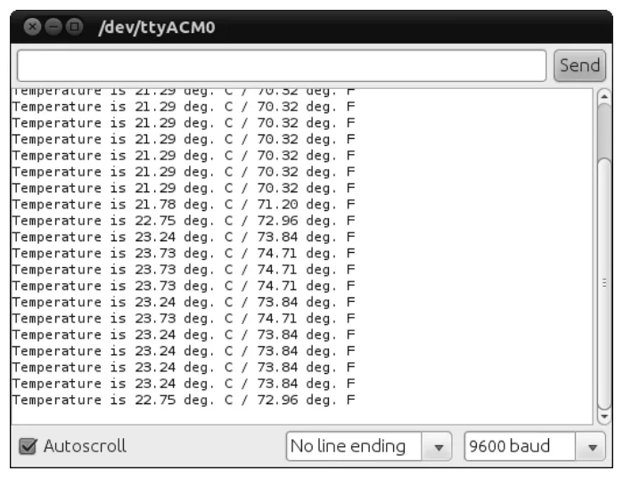

Using the hardware from Project 8, we’ll display temperature data in Celsius and Fahrenheit in the Serial Monitor window. To do this, we’ll create one function to determine the temperature values and another to display them in the Serial Monitor.
Enter this code into the IDE:
// Project 12 - Displaying the Temperature in the Serial Monitor
float celsius = 0;
float fahrenheit = 0;
void setup()
{
Serial.begin(9600);
}
❶ void findTemps()
{
float voltage = 0;
float sensor = 0;
// read the temperature sensor and convert the result to degrees C and F
sensor = analogRead(0);
voltage = (sensor * 5000) / 1024; // convert the raw sensor value to millivolts
voltage = voltage - 500; // remove the voltage offset
celsius = voltage / 10; // convert millivolts to Celsius
fahrenheit = (1.8 * celsius) + 32; // convert Celsius to Fahrenheit
}
❷ void displayTemps()
{
Serial.print("Temperature is ");
Serial.print(celsius, 2);
Serial.print(" deg. C / ");
Serial.print(fahrenheit, 2);
Serial.println(" deg. F");
// use .println here so the next reading starts on a new line
}
void loop()
{
findTemps();
displayTemps();
delay(1000);
}A lot is happening in this sketch, but we’ve created two functions, findTemps() at ❶ and displayTemps() at ❷, to simplify things. These functions are called in void loop(), which is quite simple. Thus you see one reason to create your own functions: to make your sketches easier to understand and the code more modular and possibly reusable.
After uploading the sketch, wait a few seconds, and then display the Serial Monitor. The temperature in your area should be displayed in a similar manner to that shown in Figure 5-4.

Debugging with the Serial Monitor
Serial.println("now in findTemps()");The Serial Monitor can be used to help debug (locate and fix errors) your sketch. For example, if you insert Serial.println(); statements in your sketch containing brief notes about the location in the sketch, then you can see when the Arduino passes each statement. For example, you might use the line inside the function findTemps() to let you know when the Arduino is running that particular function.